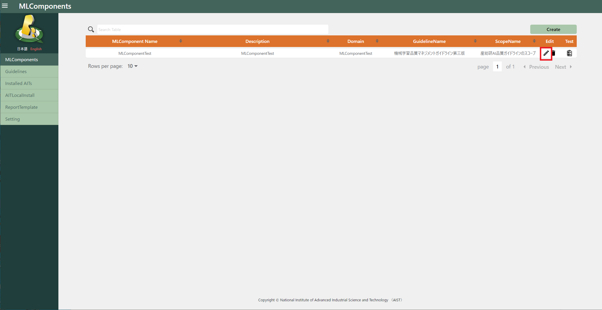
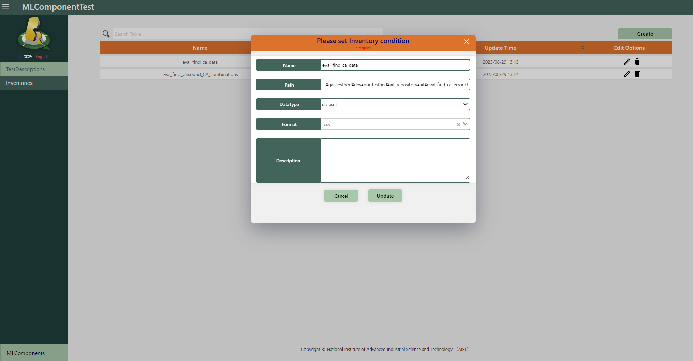
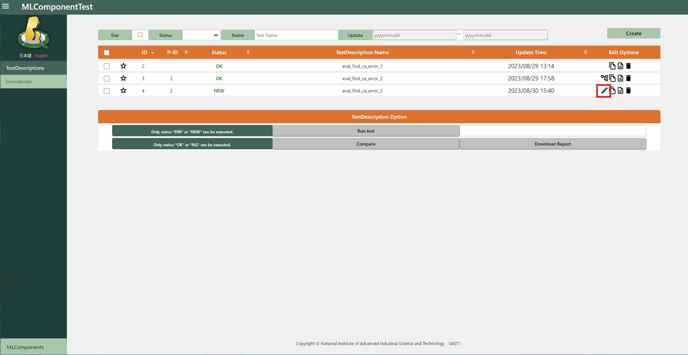
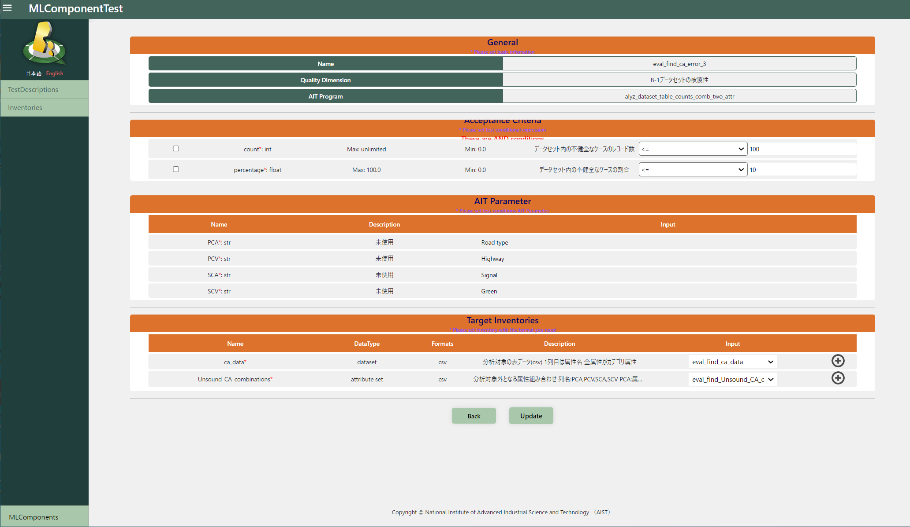

4.1. Edit¶
In this chapter, we will express how to modify the registered entities (MLComponents, Inventories, TestDescriptions). For detailed definition of each configuration items of them, please refer to the chapter 3.
4.1.1. Edit MLComponents¶
Press the icon displayed on the “edit” column to show the edit form.

Edit the registered configurations and click the “Update” button.
4.1.2. Edit inventories¶
Press the icon displayed on the “edit” column to show the edit form.
Edit the registered configurations and click the “Update” button.

4.1.3. Modification TestDescriptions¶
Press the icon displayed on the “edit” column to show the edit form. (Note that: the “edit” icon is displayed only for not executed TestDescriptions or TestDescription with error)

Edit the registered (basic) configurations and click the “Next” button.
Edit the registered (detailed) configurations and click the “update” button.
